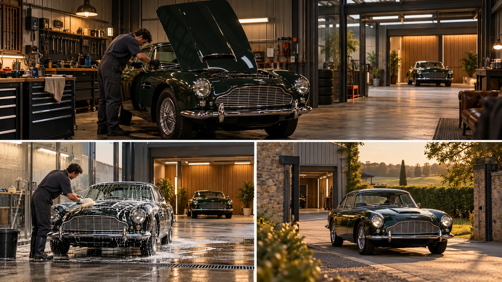

P24 · 고급 · 제작·활용
Classic Car Storage: 하루 촬영으로 여러 이야기를 만들기
보여줄 이야기의 순서와 실제 촬영 시간의 순서를 나누어 현장 계획을 세운다.
그림에서 확인할 세 가지업무 순서와 시간대별 촬영 우선순위를 함께 계획한다.
1실내의 작업
가상 차량 관리 시설에서 사람의 손작업과 차량의 상태를 본다. 넓은 비행 화면만으로 서비스의 정밀함을 설명할 수 있는지 판단한다.
2세차와 보관
같은 차량이 세차와 보관 공간에 놓이는 그림을 비교한다. 서비스가 바뀔 때 관객이 읽어야 할 행동과 공간 단서를 찾는다.
3좋은 빛의 출발
외부로 나가는 차량과 따뜻한 빛을 본다. 이 장면의 이야기상 마지막 순서와 실제 촬영 시각이 같은 개념은 아니라는 점을 비교한다.
촬영 설계
촬영을 이렇게 설계한다
납품본별 핵심 행동 정리
교육 제안: 복원·디테일링·보관·차량 출발에서 각각 보여줄 행동을 적는다. 한 장면으로 여러 납품을 채울 수 있는 부분과 독립된 세부 촬영이 필요한 부분을 나눈다.
촬영 순서를 빛에 맞추기
교육 제안: 외부 빛을 기다리는 동안 가능한 실내 작업을 앞에 배치한다. 이야기의 순서와 실제 촬영표를 따로 만들면 예상보다 날씨가 늦게 개어도 무엇을 우선할지 판단하기 쉽다.
긴 이동의 실패점 지정
교육 제안: 작업자·세차·차량 출발의 타이밍 중 하나가 어긋났을 때 어느 지점에서 컷을 나눌지 정한다. 원문의 두 테이크 성공은 그 현장의 결과이며 반복 성공을 보장하지 않는다.
Classic Car Storage의 여러 서비스 영상을 하루에 촬영하며 실내 컷부터 확보했다.
원본 영상Classic Car Storage: 하루 촬영으로 여러 이야기를 만들기
1. 업무의 이해
원본을 따라가며 서비스의 종류를 차례로 말해 본다. 작업자의 행동이 읽히기 전에 다음 공간으로 지나가 버리는 구간이 있는지 찾는다.
2. 빛의 역할
실내 작업과 외부 차량 장면의 빛을 비교한다. 마지막 인상을 만드는 요소가 움직임인지 빛인지 관리된 차량의 표면인지 나누어 본다.
3. 긴 컷의 연결 행동
원본에서 작업·세차·보관·출발이 어떻게 이어지는지 확인한다. 실패할 경우 별도 컷으로 나눌 수 있는 행동의 경계를 찾아본다.
재생이 제한되면 원본 영상 새 창을 이용하세요.
제작진 설명 · 한국어 요약 번역
답사에서 정한 범위와 순서
답사와 범위
원문 요약 번역: 제작사는 답사에서 고객 담당자와 실내외 공간, 영상이 해내야 할 역할을 확인했다고 설명한다.
납품 범위는 보관 공간, 가죽 작업장, 디테일링, 대표 차량 영상으로 나뉘었다.
순서 조정
실내를 먼저 찍고 외부는 가장 좋은 빛에 맞춰 남겨 두었다.
팀과 동선
드론, 카메라, 차량 이동을 동시에 돌리려고 4명이 한 팀을 이뤘다.
연속 드론 이동의 동작 순서도 미리 계획했다.
제작진 설명 · 한국어 요약 번역
하루 촬영의 진행과 한계
촬영 방식
원문 요약 번역: 촬영은 이른 아침부터 오후 7시까지 하루에 이뤄졌고 드론·삼각대·핸드헬드·스틸을 병행했다.
핵심 샷
핵심 항공 샷은 작업장에서 세차 중인 차량과 보관 공간을 지나 출발하는 차를 따르는 연속 이동이며 두 테이크에 끝났다.
날씨와 한계
날씨가 흐렸다가 개어 황금빛 시간대에 외부와 차량 추적을 찍었다.
모든 계획 샷을 하루에 확보했다고 하지만 재현을 보장하는 기록은 아니다.
Kling 프롬프트단문 인과 체인 · 16:9
내가 직접 만들어 본다
바깥 빛이 준비되는 순서가 실내 작업과 출발의 순서를 정한다는 인과를 지시한다.
- S01차량 관리 시설 안에서 작업자가 차를 닦고 있다.
- S02영상은 하나의 연속 쇼트다.
- S03처음 10초 동안 드론은 작업자의 손과 차체를 가까이 담는다.
- S04바깥 하늘이 흐리기 때문에 차는 실내에 머문다.
- S05작업자가 닦기를 마치자 차가 보관 공간으로 옮겨진다.
- S06다음 10초 동안 드론은 보관된 차들 사이를 지나간다.
- S07그때 구름이 걷히고 따뜻한 빛이 문틈으로 들어온다.
- S08빛이 들어오자 작업자가 큰 문을 연다.
- S09문이 열리기 때문에 차가 나아갈 길이 생긴다.
- S10마지막 10초 동안 차가 문을 지나 밖으로 출발한다.
- S11드론은 출발하는 차를 따라 바깥 빛 속으로 나간다.
- S12실내 작업, 보관, 출발이 빛의 순서대로 이어진다.
[네거티브]
- 작업자 없이 차만 놓여 있는 것 금지
- 중간에 장면이 바뀌어 연속성이 끊기는 것 금지
- 손과 차체 대신 건물 외관이 찍히는 것 금지
- 흐린 날씨인데 차가 바로 밖으로 나가는 것 금지
- 닦기가 끝나기 전에 차가 옮겨지는 것 금지
- 보관 공간 대신 야외 도로가 나오는 것 금지
- 빛이 문틈이 아닌 천장에서 쏟아지는 것 금지
- 작업자 없이 문이 혼자 열리는 것 금지
- 문이 열려도 차 앞이 가로막혀 있는 것 금지
- 차가 문을 통과하다 멈춰서 끼이는 것 금지
- 드론이 차를 놓치고 실내에 남는 것 금지
- 순서가 뒤섞여 출발이 먼저 나오는 것 금지
결과에서 볼 것
- 실내 작업이 바깥 빛을 기다리는 시간 동안 일어났는가
- 빛이 들어온 것이 문을 여는 이유로 보였는가
- 작업, 보관, 출발의 순서가 분명했는가